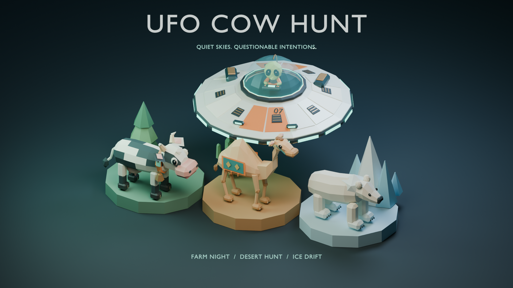
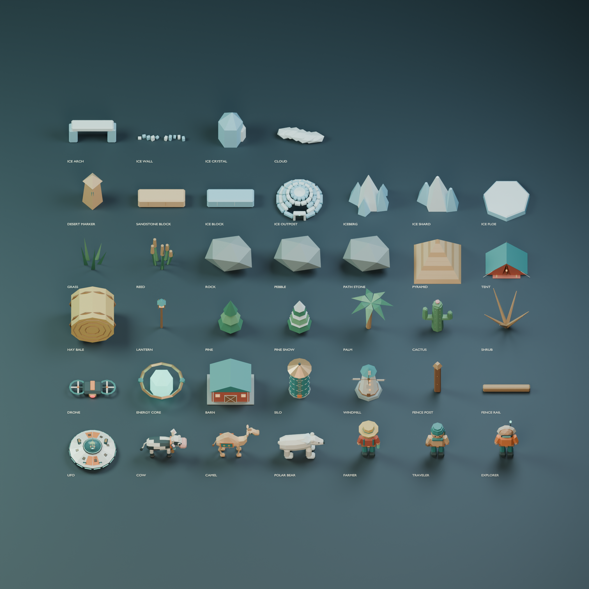
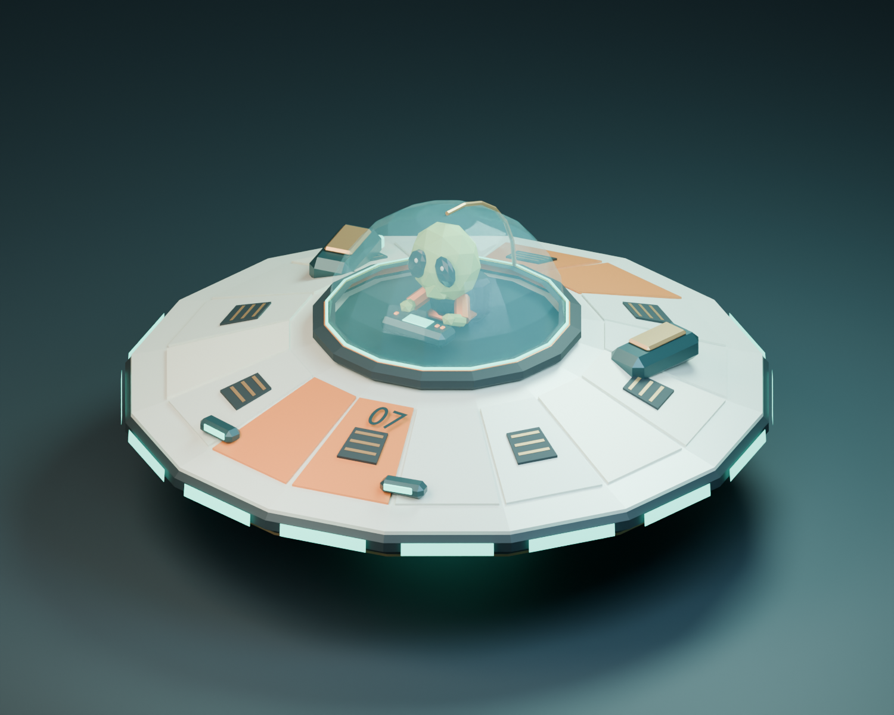
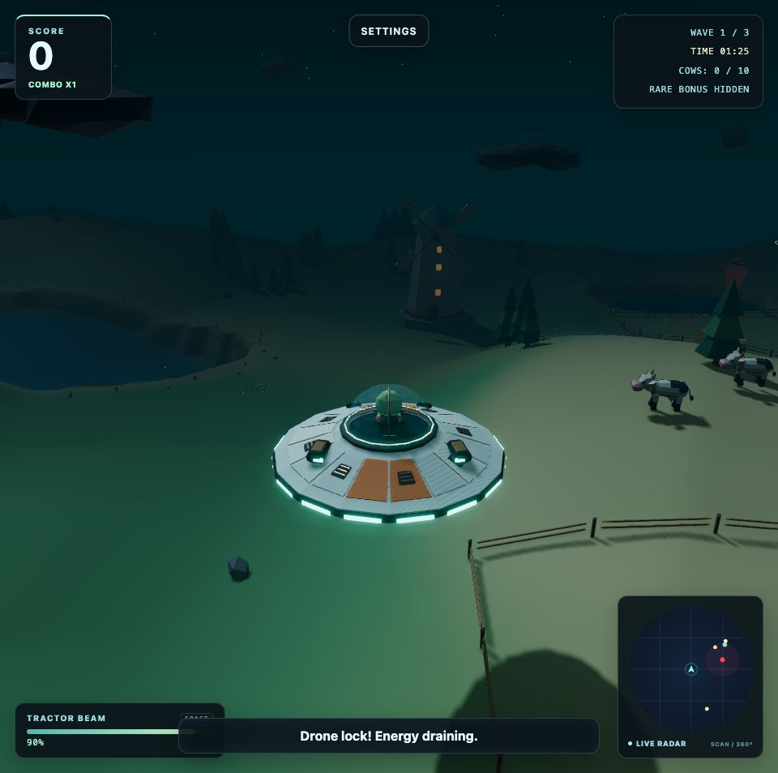
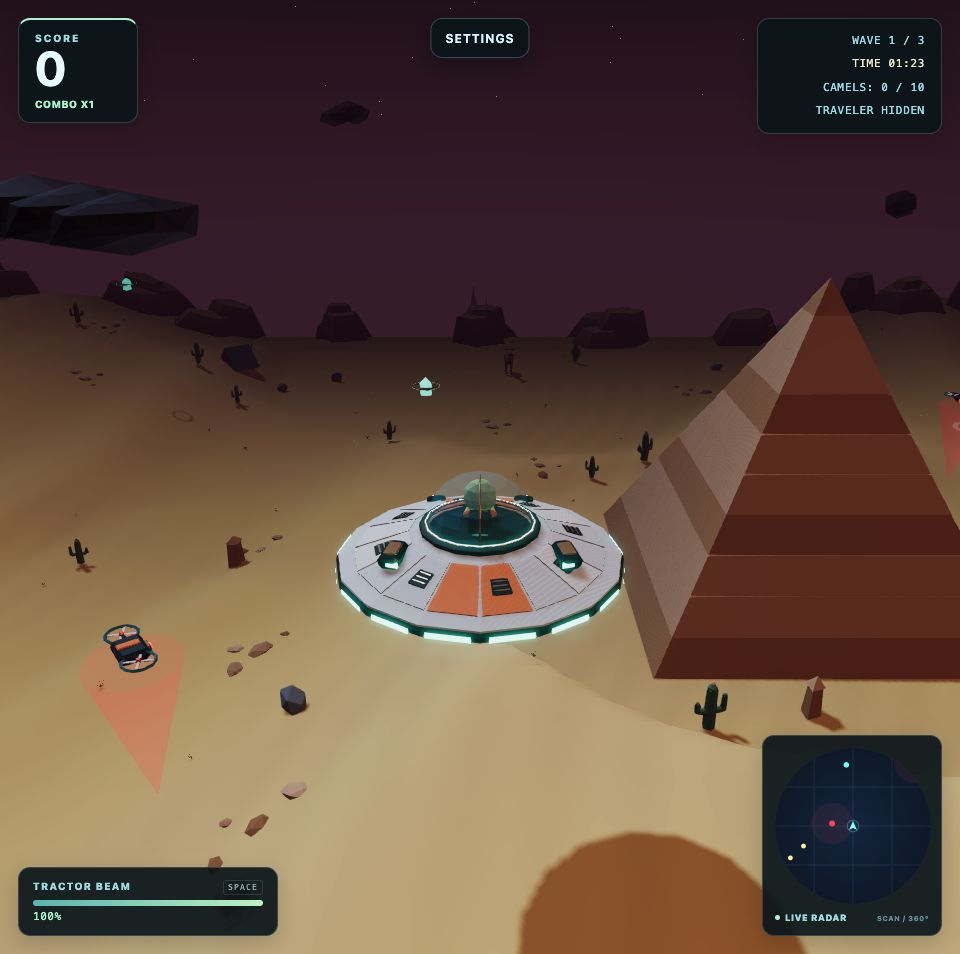
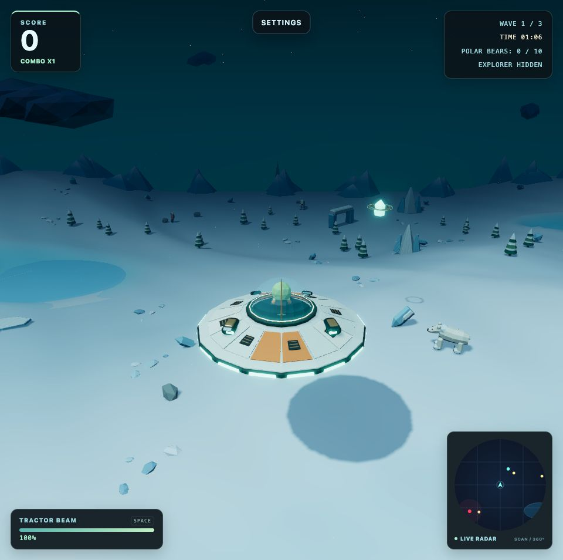

Neuer Look für UFO Cow Hunt: 39 Modelle und drei überarbeitete Welten
UFO Cow Hunt hat ein großes Grafikupdate bekommen. Vom kleinen Alien im Cockpit bis zu den Landschaften unter dem UFO passt jetzt alles besser zusammen. Ziel war ein klarer Low-Poly-Stil, in dem die Spielobjekte auch während des Fliegens gut erkennbar bleiben.

Eine gemeinsame Modellbibliothek
Das Spiel verwendet jetzt 39 in Blender erstellte Modelle: UFO, Kühe, Kamele, Eisbären, drei Bonusfiguren, Drohnen, Energieobjekte, Gebäude, Pflanzen und Dekoration. Das Scout-07-UFO kombiniert einen hellen Keramikrumpf mit Kupferdetails, einem leuchtenden Triebwerksring und einer Glaskabine mit sichtbarem Piloten.

Ein Blick hinter die Kulissen: Die Modelle sind für diese Studioübersicht auf unterschiedliche Anzeigegrößen skaliert. Das Bild zeigt den Blender-Katalog, keinen Spielausschnitt.

Drei Landschaften mit mehr Charakter
Farm Night behält seine grünen Hügel, Teiche und nächtlichen Farmgebäude. Kleine Wildblumeninseln und schwebende Lichtpunkte bringen mehr Leben auf die Wiesen.

Desert Hunt bekommt ausgeprägtere Dünen und unregelmäßige Sandsteinformationen. Die wiederholten Blockreihen am Rand sind verschwunden. Feine Windstrukturen, kleine Steingruppen und treibender Staub ergänzen die Sandflächen.

Ice Drift zeigt Schneeverwehungen, schneebedeckte Eisspitzen und weichere Übergänge an den gefrorenen Seen. Dezente Schneebewegung und kleine, teilweise versunkene Steine runden die Landschaft ab.

Ruhigere Böden statt pixeliger Flächen
Auch der Boden selbst wurde überarbeitet. Harte Farbwechsel und deutlich sichtbare Dreieckskanten machten einige Flächen unruhig. Farben und Beleuchtung gehen jetzt weicher ineinander über. Feine Sand- und Schneestrukturen blenden in der Entfernung aus, damit sie nicht flimmern. Kantenglättung auf dem fertigen Bild und eine bessere Filterung der Kontaktschatten sorgen für eine ruhigere Darstellung.
Mehr Details mit klaren Budgets
Die komplette Modellbibliothek umfasst 21.480 einzigartige Dreiecke und steckt in einer 1,96 MB großen GLB-Datei. Wiederholte Objekte teilen sich Geometrie, statische Dekoration wird zusammengefasst, und die Umgebungspartikel benötigen pro Welt nur einen Zeichenaufruf. Die Bodenflächen von Wüste und Eiswelt bleiben trotz der neuen Formen bei jeweils 25.088 Dreiecken.
Das ist keine FPS-Garantie für jedes Gerät. Es hilft dabei, die Grafik gezielt zu verbessern und die Renderkosten im Blick zu behalten. Automatisierte Tests prüfen alle drei Missionen in beiden Render-Modi, einschließlich wiederholter Levelwechsel.
Der Auftrag bleibt derselbe
Drei Wellen, 10, 15 und 20 Tiere: fliegen, Ziele einsammeln, Energie nachladen, Bonusfiguren entdecken und den Patrouillendrohnen ausweichen. Diese Regeln bleiben beim Grafikupdate erhalten.
Welche Welt gefällt euch am besten: Farm, Wüste oder Eis? Rückmeldungen zur Lesbarkeit und Performance helfen besonders. Wenn etwas ruckelt oder falsch aussieht, nennt bitte euren Browser und euer Gerät.